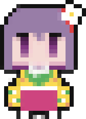

Pick a genre, or roll for something random.

Pick a genre, or roll for something random.
The embedded player is cleaner. The watch page player is the fallback: it plays everything YouTube allows, including videos with embedding turned off, but can show ads. The app switches to it by itself when the embedded player is refused.
Software is the safe default. In the GPU modes the GPU draws the interface while video is decoded in software, which avoids the crashes and window-drag glitches seen on some drivers. OpenGL (EGL) is the one to try first; if dragging the window glitches on Wayland, try the X11 window system. Vulkan is experimental. Changes apply after a restart. If a GPU mode crashes or freezes the window, the app falls back to Software by itself on the next start.
Always on: the engine never contacts Google's browser update, component and Safe Browsing services. The switch above also cancels playback statistics, tracking pings and analytics scripts. It is off by default because I could not test it against every video; if a video ever stalls, turn it off.
Settings, playlist and history are stored in one file, ~/.akyuus-music-box. The app writes no log files anywhere, and its cache is kept in memory and discarded when you quit.
To avoid repeats, songs you have already played are left out of new searches and rolls. 0 songs are remembered right now.
N next, P previous, R roll, F add or remove from playlist, L show or hide the library, / search.